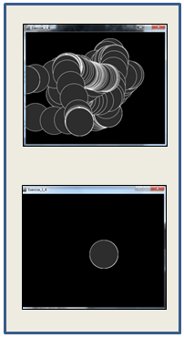

Objectives
animated drawings · conditional statements · relational operators · logical operators · variables · mouse events · key events
Conditional statements and boolean expressions
In this step, we will implement an example from your lecture.
If the x coordinate of the mouse pointer is on the:
left half of the display window, draw a rectangle on the left hand side.
right half of the display window, draw a rectangle on the right hand side.
Conditional Example 2.1
Create a new Processing sketch in your workspace and call it Example_2_1.
Enter the following code into your sketchbook (avoid the temptation to copy and paste it...you learn more by writing the code out):
void setup() {
size(100, 100);
noStroke();
fill(0);
}
void draw() {
background(204);
if (mouseX < 50)
{
rect(0, 0, 50, 100);
}
else
{
rect(50, 0, 50, 100);
}
}- Run your code. Does it work as you would expect?

Conditional statements and boolean expressions
In this step, we will implement an example from your lecture.
If the x coordinate of the mouse pointer is on the:
left third of the display window, draw a rectangle on the left third of the window.
middle third of the display window, draw a rectangle on the middle third of the window.
right third of the display window, draw a rectangle on the right third of the window.
Conditional Example 2.2
Create a new Processing sketch in your workspace and call it Example_2_2.
Enter the following code into your sketchbook (avoid the temptation to copy and paste it...you learn more by writing the code out):
void setup() {
size(100, 100);
noStroke();
fill(0);
}
void draw() {
background(204);
if (mouseX < 33) {
rect(0, 0, 33, 100);
}
else if (mouseX < 66) {
rect(33, 0, 33, 100);
}
else {
rect(66, 0, 33, 100);
}
}- Run your code. Does it work as you would expect?
Conditional statements and logical operators
In this step, we will implement an example from your lecture.
If the mouse pointer is:
inside the rectangle coordinates, then fill the rectangle with white.
otherwise, fill with black.
Conditional Example 2.3
Create a new Processing sketch in your workspace and call it Example_2_3.
Enter the following code into your sketchbook (avoid the temptation to copy and paste it...you learn more by writing the code out):
void setup() {
size(100, 100);
noStroke();
fill(0);
}
void draw() {
background(204);
if ((mouseX > 40) && (mouseX < 80) &&
(mouseY > 20) && (mouseY < 80)) {
fill(255);
} else {
fill(0);
}
rect(40, 20, 40, 60);
}- Run your code. Does it work as you would expect?

Conditional statements and logical operators
In this step, we will implement an example from your lecture.
If the mouse pointer is in the upper-left quadrant of the display window, draw a black rectangle covering the upper-left quadrant of the window.
Repeat this approach for upper-right, lower-left and lower-right quadrants.
Conditional Example 2.4
Create a new Processing sketch in your workspace and call it Example_2_4.
Enter the following code into your sketchbook (avoid the temptation to copy and paste it...you learn more by writing the code out):
void setup() {
size(100, 100);
noStroke();
fill(0);
}
void draw() {
background(204);
if ((mouseX <= 50) && (mouseY <= 50)) {
rect(0, 0, 50, 50); // upper-left
} else if ((mouseX <= 50) && (mouseY > 50)) {
rect(0, 50, 50, 50); // lower-left
} else if ((mouseX > 50) && (mouseY <= 50)) {
rect(50, 0, 50, 50); // upper-right
} else {
rect(50, 50, 50, 50); // lower-right
}
}- Run your code. Does it work as you would expect?

Mouse events
In this step, we will implement an example from your lecture.
If the mouse is pressed:
draw a gray square with a white outline.
otherwise draw a gray circle with a white outline.
Mouse Example 2.5
Create a new Processing sketch in your workspace and call it Example_2_5.
Enter the following code into your sketchbook (avoid the temptation to copy and paste it...you learn more by writing the code out):
void setup() {
size(100,100);
}
void draw() {
background(0);
stroke(255);
fill(128);
if (mousePressed){
rect(45,45,34,34);
}
else{
ellipse(45,45,34,34);
}
}- Run your code. Does it work as you would expect?
Mouse events
In this step, we will implement an example from your lecture.
If the mouse is pressed:
set the fill to white and draw a square.
otherwise set the fill to black and draw a square.
Mouse Example 2.6
Create a new Processing sketch in your workspace and call it Example_2_6.
Enter the following code into your sketchbook (avoid the temptation to copy and paste it...you learn more by writing the code out):
void setup() {
size(100,100);
}
void draw() {
background(204);
if (mousePressed == true)
{
fill(255); // white
} else {
fill(0); // black
}
rect(25, 25, 50, 50);
}- Run your code. Does it work as you would expect?

Mouse events
In this step, we will implement an example from your lecture.
If the LEFT button on the mouse is pressed, set the fill to black and draw a square. As soon as the LEFT button is released, gray fill the square.
If the RIGHT button on the mouse is pressed, set the fill to white and draw a square. As soon as the RIGHT button is released, gray fill the square.
If no mouse button is pressed, set the fill to gray and draw a square.
Mouse Example 2.7
Create a new Processing sketch in your workspace and call it Example_2_7.
Enter the following code into your sketchbook (avoid the temptation to copy and paste it...you learn more by writing the code out):
void setup() {
size(100,100);
}
void draw() {
if (mousePressed){
if (mouseButton == LEFT)
fill(0); // black
else if (mouseButton == RIGHT)
fill(255); // white
}
else {
fill(126); // gray
}
rect(25, 25, 50, 50);
}- Run your code. Does it work as you would expect?

Mouse events
In this step, we will implement an example from your lecture.
Draw a circle on the mouse (x,y) coordinates.
Each time you move the mouse, draw a new circle.
All the circles remain in the sketch until you press a mouse button.
When you press a mouse button, the sketch is cleared and a single circle is drawn at the mouse (x,y) coordinates.
Mouse Example 2.8
Create a new Processing sketch in your workspace and call it Example_2_8.
Enter the following code into your sketchbook (avoid the temptation to copy and paste it...you learn more by writing the code out):
void setup() {
size(500,400);
background(0);
}
void draw() {
if (mousePressed) {
background(0);
}
stroke(255);
fill(45,45,45);
ellipse(mouseX, mouseY, 100, 100);
}- Run your code. Does it work as you would expect?

Exercises
For each exercise listed below, create a new sketch.
You may need to visit the Processing website for additional information.
Exercise 1
Create a display window of 500x400, with a black background.
When the mouse is pressed, draw a red circle (100 pixel diameter) with a white outline.
Note: when the mouse is pressed and dragged, multiple circles should be drawn. When the mouse is released and dragged, no circles should be drawn.
Exercise 2
Create a display window of 500x400, with a black background.
When the LEFT mouse button is pressed, draw a red circle (50 pixel diameter) with a white outline. Note: when this button is pressed and dragged, multiple circles should be drawn.
When the RIGHT mouse button is pressed, draw a blue square (length of 50 pixels) with a white outline. Note: when this button is pressed and dragged, multiple squares should be drawn.
When no button is pressed and the mouse is dragged, nothing should be drawn.
Exercise 3
Draw circles (diameter 100) as the mouse is moved (the background should not be cleared).
When the mouse is pressed, reduce the size of the circle by 10 pixels.
When the circle diameter reaches 50 pixels, don't reduce it anymore.
Exercise 4
Draw circles (diameter 100) as the mouse is moved (the background should not be cleared).
As each circle is drawn, its colour should vary from the previous one (use mathematical calculations on your RBG colours).
Make sure you boundary test this exercise. What we mean by that is...test what happens when your colour reaches 0 or when it reaches 255. Does it reset itself and cycle through the colours again or does it get stuck drawing in only one colour?
Challenges
For each challenge listed below, create a new sketch.
You may need to visit the Processing website for additional information.
Challenge 1
Draw a continuously bouncing ball.
For the moment, the xCoordiate should remain the same value i.e. the ball only bounces vertically, so it is only the yCoordiate that needs to change.
Challenge 2
Visit the Processing website and read up on the following keyEvents:
- keyPressed (boolean variable used to determine if a key was pressed).
- key (which stores a single alphanumeric character i.e. the most recently pressed key).
In a new sketch, draw a cirlce if the C key was pressed and a rectangle if any other key was pressed.
Test your code...is the keyboard input case sensitive? Can you enter a lower case c to draw a circle?
Challenge 3
In a new sketch, draw a vertical line that is the height of your display window.
This vertical line should start in the left most position of your display window and move right, pixel by pixel, until it reaches the right hand side of your display window.
Upon reaching the right hand side, the vertical line should reverse direction and return, pixel by pixel, to the left hand side of the display window.
As your vertical line is continually traversing the display window, your grayscale background should be varying very slightly in colour.
Solutions
The solutions for this lab can be found here.
If you require unzipping software, 7zip is a good choice: http://www.7-zip.org/ (or Keka for Mac http://www.kekaosx.com/en/)
After unzipping the solutions, it might be a good idea to copy the folders to your sketchbook folder. From Processing, you could then use File, followed by Sketchbook to easily open them.